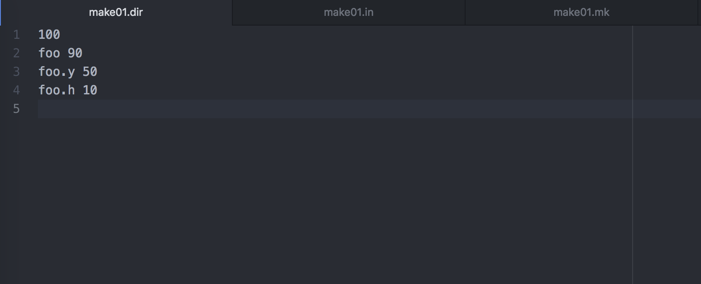
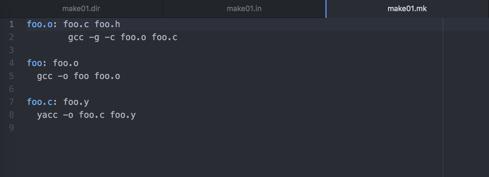
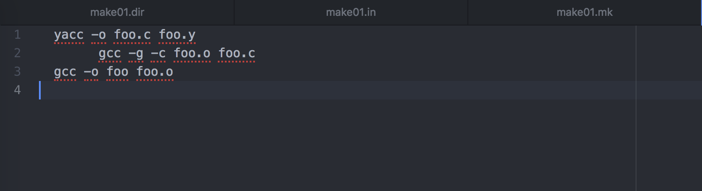
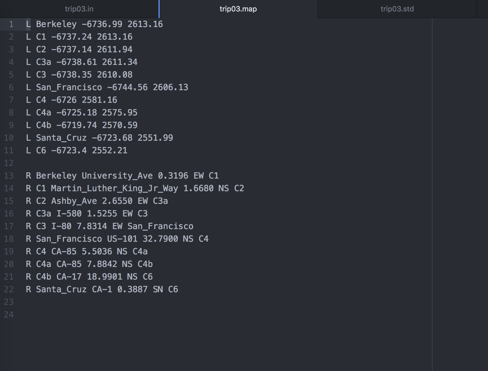
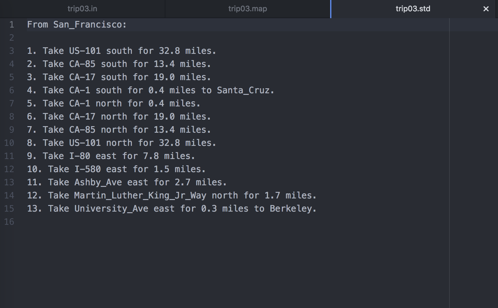

Graph Package with GNU Make and GPS Clients
UC Berkeley - Fall 2018
Overview
For my data structures class, I implemented a library package in Java that builds and manipulates graph structures. Unlike the graphs you'd see in an Excel sheet, these graph structures consist of nodes that hold values, and edges, similar to a line or an arrow, that connect the nodes to each other. I then built two clients for the package: a GNU Make client and a GPS client similar to Google Maps. The Make client uses the graph package to build targets (that represent software or files that need to be setup) in the correct order, and the GPS client finds the shortest path from node A to B in a graph of locations using the A* Search algorithm. The A* Search algorithm is a graph traversal algorithm that uses weights to intelligently search for the least cost path from a starting node to an end node.
The Code
I implemented classes with the functionalities of the basic graph structures for the graph package. My package can read input files that contain graph information for both clients. For the GNU Make client, I implemented functionalities such that the client builds graphs that have connections between nodes to indicate the order in which the targets need to be built. For the GPS client, the client uses the graph package to build graphs where locations in a map are nodes, and the connections between nodes are streets connecting the locations. I implemented the A* Search algorithm so that it uses Euclidean distance heuristics to weight decisions on which edges or "streets" to traverse next when building the shortest path from starting node A to ending node B.
GNU Make Client Example

Above is the makefile directory that lists the file info for three example files: foo, foo.y, and foo.h. The line with 100 marks the time that the directory was last updated in Unix since the Epoch. The numbers next to files show the time the file was last updated. These numbers must be less than the time when the directory was last updated.

The makefile shown above gives all of the rules for each file. The file foo.o has dependencies on foo.c and foo.h in that order, so the files foo.c and foo.h must be built first before foo.o can be built. Once foo.o is ready to be built, its rule, "gcc -g -c foo.o foo.c," will be processed in the output. For this example, let's build the file foo. According to the makefile, foo has a dependecy on foo.o, which depends on foo.c and foo.h. Therefore, the order of dependencies to build file foo is foo.c, foo.h, and then foo.o.

The output file above shows that the first rule to complete was foo.c's rule "yacc -o foo.c foo.y", because foo.c's dependency foo.y doesn't have any rules and the directory shows that foo.y was already built at time 50. Next is foo.o's rule, "gcc -g -c foo.o foo.c," because foo.c was taken care of and foo.h doesn't have any rules and was already built at time 10. Last is foo's rule, "gcc -o foo foo.o," because foo's dependencies have all been built. In the background, the client read in the input files and used the graph package to construct a directed graph that had connections between the files that depend on each other. The graph client traversed the graph to find the right order to build the dependencies based on the rules in the makefile.
GPS Client Example

The above map lists all of the locations and roads in our example world. The lines that start with L are locations. There are three main cities, San Francisco, Berkeley, and Santa Cruz, and other less important cities like C1, C2, etc. The two numbers after each city name are the city's coordinates. Lines that start with R are roads. The first road listed, University Ave., runs East to West between Berkeley and C1, and spans a distance of 0.3196. The GPS client will pass this map to the graph package so that the graph package can construct a graph to represent the road system of the (flat) world. For this example, let's take a trip from San Francisco to Santa Cruz to Berkeley! The GPS client will take in these three locations, and then run the A* search algorithm on the graph of the map to find the shortest driving path that goes to all of our destinations.

The output of the GPS client is shown above. The output gives the driving directions that will cover the shortest distance to reach our destination in Berkeley while also taking a detour to Santa Cruz.